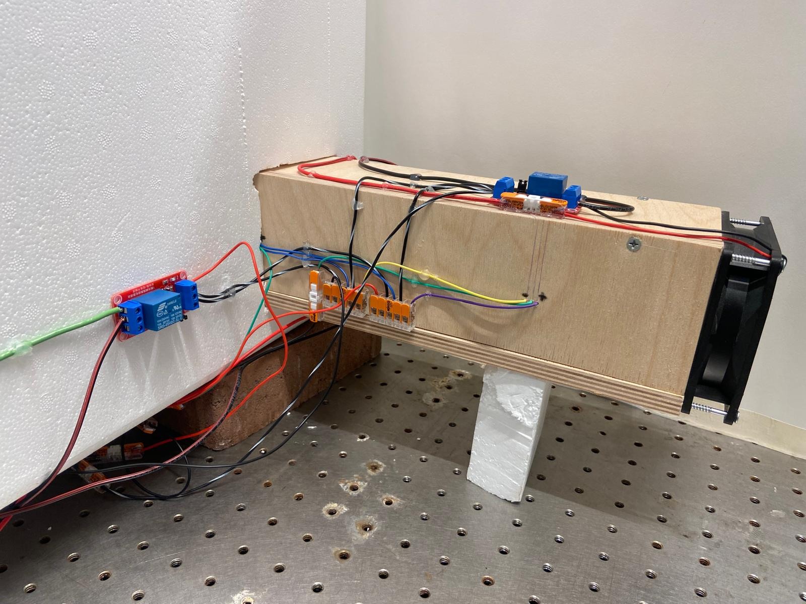

this is the kangaroo rat! it is an exceptionally cute little animal, but it is also really fascinating in its ability to be energy efficient and preserve the water and heat in its body, despite living in an extreme climate. the kangaroo rat's nasal passages function as a counter-current heat exchanger. when the rodent exhales, the walls of the nasal passage absorbs and stores the heat and moisture from the exhaled air. then, when the rodent inhales, the air reabsorbs the heat and moisture from the walls of the nasal passages. this reduces the need to warm and humidify inhaled air using metabolic heat, allowing the kangaroo rat to recover a whopping 83% of water, and preserve 88% of heat lost due to breathing.
# the nosehouse
# ---------------------------------
"nosehouse: heat-conserving ventilators based on nasal counterflow exchangers" by steven vogel builds upon the biological principle of the kangaroo rat's nasal passageways. vogel constructed this "nosehouse" where he replicates the upper respiratory tract of a kangaroo rat to ventilate and thermoregulate an enclosed space, such as a modern building, in an energy efficient manner. this is the model that i am attempting to replicate and build upon.
# the schematics
# ---------------------------------
vogel's diagram of model and exchanger
# the circuitry
# ---------------------------------
the sensor circuit - this was how all 6 sensors were connected (just each to different data pins)
the load circuit - this was how all the fans and the heater were connected (also each to different data pins)
# the code
# ---------------------------------
i wrote 3 different codes to run on my model. all the code is at the bottom of this page.
the first one was a test code, which i ran a lot in the beginning to test if all my sensors and relays were functioning. the code simply collected data from all 6 sensors, and printed them. if the data was not being collected, it printed an error message. then, using the delay function, i then would switch all the relays on and off. this test code was used for a lot of trial and error (a lot). since there was a lot of wiring going on, this helped me narrow down what component and what wires were the problem.
the second code was just gathering the temperature data from the model for the control case. here, i just needed the one relay controlling the aerial fan to always be on (to ensure uniform temperature inside the chamber). i also continued collecting the data from all 6 sensors. i learned the hard way that you cannot copy data off of the serial monitor. so, i added a data streamer add in to excel, that allowed me to collect and record the data and save it directly onto a csv file.
the third code was the one that involved the exchangers. for this one, i needed to incorporate the c++ class structure to write a non-blocking code so that i could run the relay and sensor functions simultaneously. the aerial fan continued to stay switched on. the sensors also continued gathering data (and transferring it to excel and a csv file). now, the two relays controlling the exchanger fans would also switch on an off alternatively every 100 seconds.
# the product
# ---------------------------------
set up
exchanger
aerial fan
heater
sensor
exchanger fan
# the mess
# ---------------------------------
i still have a bit to do to improve my project. while the wiring and circuit finally work (yay!) it is kind of a mess.

# future steps
# ---------------------------------
by tuesday: rewire circuit so it looks a lot cleaner, redo some of the mechanics to make things look cleaner, add sd card and data logger so data can be collected when i am not sitting at the model with my laptop for hours, solder the wire connections.
by finals week: add more sensors along exchanger and inside chamber, build an environmental chamber with temperature control, develop more complex exchanger designs.
# the code contd.
# ---------------------------------
code 1 (left some comments in to show the process):
#include "DHT.h"
// Relay pins
int relayPin1 = 2; //aerial fan (red)
int relayPin2 = 11; //left fan (blue)
int relayPin3 = 9; //right fan (white)
int relayPin4 = 10; //heater (orange)
// DHT pins
#define DHTPIN1 3 //back (brown)
#define DHTPIN2 4 //left in (yellow)
#define DHTPIN3 5 //left out (green) FAILED
#define DHTPIN4 8 //right in (purple)
#define DHTPIN5 12 //right out (gray)
#define DHTPIN6 13 //Move to 8 maybe, front (gray)
#define DHTTYPE DHT22
DHT dht1(DHTPIN1, DHTTYPE);
DHT dht2(DHTPIN2, DHTTYPE);
DHT dht3(DHTPIN3, DHTTYPE);
DHT dht4(DHTPIN4, DHTTYPE);
DHT dht5(DHTPIN5, DHTTYPE);
DHT dht6(DHTPIN6, DHTTYPE);
void setup() {
// Relay set up
pinMode(relayPin1, OUTPUT);
pinMode(relayPin2, OUTPUT);
pinMode(relayPin3, OUTPUT);
pinMode(relayPin4, OUTPUT);
// Start with relays off
digitalWrite(relayPin1, HIGH);
digitalWrite(relayPin2, HIGH);
digitalWrite(relayPin3, HIGH);
digitalWrite(relayPin4, HIGH);
Serial.begin(9600);
// Initialize sensors
dht1.begin();
dht2.begin();
dht3.begin();
dht4.begin();
dht5.begin();
dht6.begin();
}
void loop() {
// Relay control
Serial.println("Turning all relays ON");
digitalWrite(relayPin1, LOW);
digitalWrite(relayPin2, LOW);
digitalWrite(relayPin3, LOW);
digitalWrite(relayPin4, LOW);
delay(4000);
Serial.println("Turning all relays OFF");
digitalWrite(relayPin1, HIGH);
digitalWrite(relayPin2, HIGH);
digitalWrite(relayPin3, HIGH);
digitalWrite(relayPin4, HIGH);
delay(4000);
// Sensor readings
printSensorData("Sensor1", dht1);
printSensorData("Sensor2", dht2);
printSensorData("Sensor3", dht3);
printSensorData("Sensor4", dht4);
printSensorData("Sensor5", dht5);
printSensorData("Sensor6", dht6);
delay(2000);
}
void printSensorData(const char* label, DHT &sensor) {
float h = sensor.readHumidity();
float t = sensor.readTemperature();
if (isnan(h) || isnan(t)) {
Serial.print(label);
Serial.println(": Failed to read");
} else {
Serial.print(label);
Serial.print(": ");
Serial.print(t);
Serial.print(" °C, ");
Serial.print(h);
Serial.println(" %");
}
}
code 2:
#include "DHT.h"
// Relay pins
int relayPin1 = 2; //aerial fan
// DHT pins
#define DHTPIN1 3 //back
#define DHTPIN2 13 //front
#define DHTPIN3 4 //left in
#define DHTPIN4 8 //right in
#define DHTPIN5 5 //left out
#define DHTPIN6 12 //right out
#define DHTTYPE DHT22
DHT dht1(DHTPIN1, DHTTYPE);
DHT dht2(DHTPIN2, DHTTYPE);
DHT dht3(DHTPIN3, DHTTYPE);
DHT dht4(DHTPIN4, DHTTYPE);
DHT dht5(DHTPIN5, DHTTYPE);
DHT dht6(DHTPIN6, DHTTYPE);
void setup() {
// Relay set up
pinMode(relayPin1, OUTPUT);
// Start with aerial fan on
digitalWrite(relayPin1, HIGH);
Serial.begin(9600);
// Initialize sensors
dht1.begin();
dht2.begin();
dht3.begin();
dht4.begin();
dht5.begin();
dht6.begin();
}
void loop() {
// Sensor readings
float h1 = dht1.readHumidity();
float t1 = dht1.readTemperature();
float h2 = dht2.readHumidity();
float t2 = dht2.readTemperature();
float h3 = dht3.readHumidity();
float t3 = dht3.readTemperature();
float h4 = dht4.readHumidity();
float t4 = dht4.readTemperature();
float h5 = dht5.readHumidity();
float t5 = dht5.readTemperature();
float h6 = dht6.readHumidity();
float t6 = dht6.readTemperature();
// Printing so that all data collected at same time is on same line and comma separated
Serial.print(t1); Serial.print(","); Serial.print(h1); Serial.print(",");
Serial.print(t2); Serial.print(","); Serial.print(h2); Serial.print(",");
Serial.print(t3); Serial.print(","); Serial.print(h3); Serial.print(",");
Serial.print(t4); Serial.print(","); Serial.print(h4); Serial.print(",");
Serial.print(t5); Serial.print(","); Serial.print(h5); Serial.print(",");
Serial.print(t6); Serial.print(","); Serial.println(h6);
delay(100000);
}
code 3:
#include "DHT.h"
// Relay pins
int relayPin1 = 2; //aerial fan
int relayPin2 = 11; //left fan
int relayPin3 = 9; //right fan
// DHT pins
#define DHTPIN1 3 //back
#define DHTPIN2 13 //front
#define DHTPIN3 4 //left in
#define DHTPIN4 8 //right in
#define DHTPIN5 5 //left out
#define DHTPIN6 12 //right out
#define DHTTYPE DHT22
DHT dht1(DHTPIN1, DHTTYPE);
DHT dht2(DHTPIN2, DHTTYPE);
DHT dht3(DHTPIN3, DHTTYPE);
DHT dht4(DHTPIN4, DHTTYPE);
DHT dht5(DHTPIN5, DHTTYPE);
DHT dht6(DHTPIN6, DHTTYPE);
// Timing variables
unsigned long lastRelayToggle = 0;
unsigned long relayInterval = 10000; // toggle relays every 100s
unsigned long lastSensorRead = 0;
unsigned long sensorInterval = 10000; // read sensors every 10s
bool relaysOn = false;
void setup() {
// Relay set up
pinMode(relayPin1, OUTPUT);
pinMode(relayPin2, OUTPUT);
pinMode(relayPin3, OUTPUT);
// Aerial fan always on
digitalWrite(relayPin1, HIGH);
// Start with left fan off
digitalWrite(relayPin2, LOW);
// Start with right fan on
digitalWrite(relayPin3, HIGH);
Serial.begin(9600);
// Initialize sensors
dht1.begin();
dht2.begin();
dht3.begin();
dht4.begin();
dht5.begin();
dht6.begin();
}
void loop() {
unsigned long now = millis();
// Relay control
if (now - lastRelayToggle >= relayInterval) {
lastRelayToggle = now;
relaysOn = !relaysOn; // flip state
if (relaysOn) {
digitalWrite(relayPin2, HIGH);
digitalWrite(relayPin3, LOW);
} else {
digitalWrite(relayPin2, LOW);
digitalWrite(relayPin3, HIGH);
}
}
// Sensor readings
if (now - lastSensorRead >= sensorInterval) {
lastSensorRead = now;
float h1 = dht1.readHumidity();
float t1 = dht1.readTemperature();
float h2 = dht2.readHumidity();
float t2 = dht2.readTemperature();
float h3 = dht3.readHumidity();
float t3 = dht3.readTemperature();
float h4 = dht4.readHumidity();
float t4 = dht4.readTemperature();
float h5 = dht5.readHumidity();
float t5 = dht5.readTemperature();
float h6 = dht6.readHumidity();
float t6 = dht6.readTemperature();
Serial.print(t1); Serial.print(","); Serial.print(h1); Serial.print(",");
Serial.print(t2); Serial.print(","); Serial.print(h2); Serial.print(",");
Serial.print(t3); Serial.print(","); Serial.print(h3); Serial.print(",");
Serial.print(t4); Serial.print(","); Serial.print(h4); Serial.print(",");
Serial.print(t5); Serial.print(","); Serial.print(h5); Serial.print(",");
Serial.print(t6); Serial.print(","); Serial.println(h6);
}
}